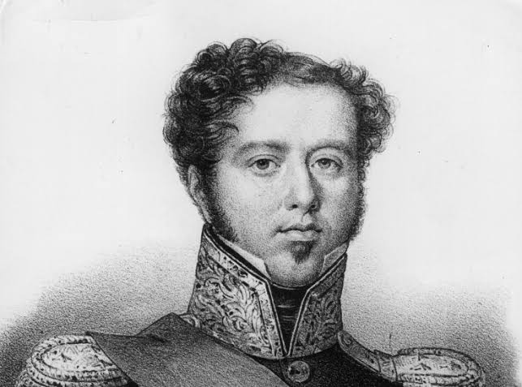

Contexto Histórico: O Brasil Colônia e a Influência Portuguesa
Vista do Largo do Carmo – Retrata o Rio de Janeiro colonial e o cotidiano da população no período antes da independência.Cena de um Engenho de Açúcar – Mostra o sistema econômico colonial baseado na monocultura e na escravidão, um pano de fundo para as tensões que levaram à independência.
O Grito do Ipiranga: O Momento da Proclamação
Independência ou Morte! – A pintura mais famosa sobre o momento da independência, com Dom Pedro I às margens do Ipiranga.Proclamação da Independência – Gravura que popularizou a visão heroica do evento.
Personagens Centrais: Líderes e Protagonistas da Independência

Retrato de Dom Pedro I – Mostra o imperador que se tornou o símbolo da independência.Retrato de José Bonifácio de Andrada e Silva – Importante conselheiro de Dom Pedro I e articulador do processo independentista.
A Reação Popular e o Cotidiano no Brasil Pós-Independência
O Lavrador de Café – Embora seja de uma época posterior, pode ilustrar as mudanças econômicas e sociais que ocorreram após a independência.Fotografias do Rio de Janeiro no século XIX – Fotografias de cidades brasileiras após a independência, como do fotógrafo Marc Ferrez, que documentam as transformações urbanas.